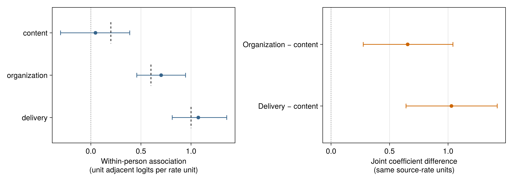
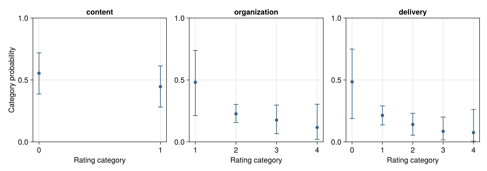
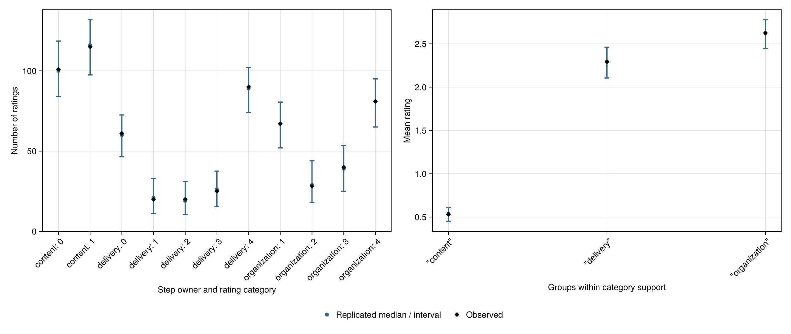
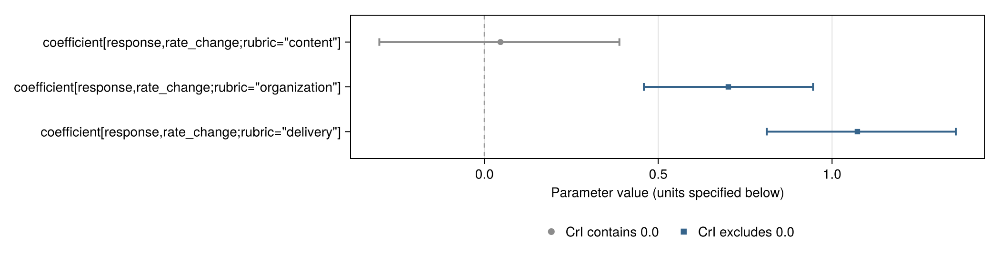

Compare the Same Predictor Across Criteria
Does a speaker's change in rate relate more strongly to delivery than to content? Fit the associations together and compare their joint posterior difference. This scalar model can use different category counts while sharing person, performance and rater effects.
Specify the ratings
Use one row per rating and criterion. In the artificial example, 24 speakers each give three presentations; eight raters supply 648 ratings. Content is binary (0–1), organization has four categories (1–4), and delivery has five (0–4). These are teaching choices, not a recommended rubric or sample size.
talk identifies the same presentation across raters and criteria. Its rate belongs to that presentation. aspect identifies the criterion. Higher scores must consistently mean more of the modeled trait. One common scalar trait with unit loadings is an assumption; different category counts do not establish it.
using BayesianMGMFRM, JSON3
using BayesianMGMFRM.Legacy
using Distributions: Normal, LogNormal
ratings = JSON3.read(read(joinpath(pkgdir(BayesianMGMFRM),
"examples", "data", "criterion_ratings.json"), String))
spec = mfrm_spec(ratings;
person=:speaker, performance=:talk, score=:rating,
facets=(presentation=:talk, assessor=:judge, rubric=:aspect),
steps=:rubric,
category_levels=Dict("content"=>0:1, "organization"=>1:4, "delivery"=>0:4),
decompose=(rate=(between=:mean_rate, within=:rate_change),),
predictors=(person=(mean_rate=Normal(0,.6),),
assessor=(experience=Normal(0,.6),),
response=(rate_change=(by=:rubric, prior=Normal(0,.6)),)),
population=(person=LogNormal(log(.6),.45),
presentation=LogNormal(log(.4),.45), assessor=LogNormal(log(.35),.45)),
prior_sd=(facets=(rubric=.4,), step=.45), intercept=Normal(0,.8))
validate_design(spec)rubric is a user-chosen facet name. The by declaration creates one coefficient per level from the same source column, with independent copies of the supplied Normal prior. It does not add a common coefficient or random slopes. The between coefficient remains common in this example; the three within coefficients differ. Do not add unrestricted common and full level-specific versions of the same predictor: they are aliased. All example priors use the supplied artificial units.
Fit and compare
The next block starts estimation. Use julia --threads=4 for four parallel chains. To read the supplied result without computing, skip to the figures below.
result = fit(spec; chains=4, warmup=600, ndraws=1000, seed=7112,
chain_execution=:threads, max_parallel_chains=4)
qualify(result)
delivery = "coefficient[response,rate_change;rubric=\"delivery\"]"
content = "coefficient[response,rate_change;rubric=\"content\"]"
difference = BayesianMGMFRM.posterior_contrast(result; left=delivery, right=content)
report = fit_report(result; parameters=[delivery, content])
save_fit("criterion-fit.jls", result)
restored = load_fit("criterion-fit.jls")The difference is computed from paired draws, retaining their dependence. It is in unit adjacent logits per rate unit, not rating points. Separate significance or overlap of marginal intervals does not test this difference. Inspect whole-fit diagnostics and the contrast's mean/interval-endpoint Monte Carlo error. Same-source declarations permit this contrast; unrelated predictor units remain protected from accidental subtraction.
Read the supplied result
The four-chain example passes its whole-fit numerical gates (maximum R-hat 1.0044, minimum bulk/tail ESS 1,531, no retained divergences). The delivery-minus- content coefficient difference is 1.029, with a 95% interval [0.641, 1.420]. Its mean MCSE is .0022 and interval-endpoint MCSEs are .0109/.0105. This indicates a positive difference in this synthetic dataset under this model and prior; it does not establish general detection performance. The between-person and experience intervals both include zero. The residual-SD priors are close to the generating SDs; no prior-robustness claim follows from this example.

Points are posterior medians; bars are 95% equal-tailed intervals. The left panel shows within-person rate associations; the right shows joint differences from content. Dashed lines on the left mark the synthetic generating values. These are one artificial fitted example, not empirical evidence about speaking.

Posterior mean category probabilities and pointwise 95% intervals for the same observed person, presentation and rater. Each criterion uses its own declared support. These are intervals for probabilities, not replicated-outcome intervals. Known-performance prediction preserves training rates and unique-performance means. It does not create a new performance or a causal intervention in rate.

Black diamonds are observed counts/means; blue points and bars are medians and 95% pointwise intervals from 500 posterior-replicated datasets. Both panels are separated by the steps owner. Raw means on binary and five-category scales are not comparable. This exploratory PPC checks these summaries; it does not test all within-assessment dependence, and predictive endpoint MCSE is not assessed.
using CairoMakie
ppc = predictive_check(result; groupby=:rubric, ndraws=500, seed=8111)
BayesianMGMFRM.plot(ppc; kind=:predictive)
receipt = save_report("criterion-ppc.json", ppc; return_receipt=true)
BayesianMGMFRM.plot(load_report(receipt.path; expected_sha256=receipt.sha256);
kind=:predictive) # redraws saved values; no new inference or predictionThe supplied computed reports are in examples/reports/criterion-posterior.json and criterion-ppc.json; their hashes are in criterion-sha256.json. Load them with load_report and plot to redraw without fitting. Portable reports preserve computed values; native joint draws require their source and compatible environment.
Check unused categories and constant ratings
Always declare the intended support: a five-category criterion remains 1:5 when the sample uses only 1, 2, 4, 5 or 1, 2, 3, 4. Do not replace its support with the observed unique scores.
check = validate_design(spec)
check.identified # structural design screen
check.response_patterns.issues # category/pattern warnings with IDs and counts
check.response_patterns.category_usageunused_interior_category and unobserved_declared_endpoint identify unused possible categories within each steps-owner level. constant_score_pattern identifies person/facet levels with at least two ratings all using one category, separately within each steps-owner group. Thus binary and five-category scores are not pooled. A constant whole group produces one warning covering its subgroups; the detailed constant_patterns records still retain their IDs.
These warnings retain every observation and category. They do not reject a fit, declare a rater unreliable or change numerical qualification. Agreement for one performance and constant scores over many performances need different interpretations. Inspect assignment, prior sensitivity, category-count and variation PPC. fit emits a warning summary; design_summary, validate_design, and newly computed fit_report/predictive_check results retain the evidence. Saved old reports retain their original warnings; recompute fit_report from a compatible native fit to add the new audit without rerunning estimation.
Figure captions summarize these pattern warnings by type and number of issue records. For a newly computed report or the supplied criterion-reference.json, inspect individual cases in report.response_patterns.issues, or print their messages with foreach(println, report.response_patterns.warnings). Counts can overlap across facets and are not numbers of distinct people or ratings. The saved report retains every warning; other model and numerical warnings remain in the caption. Reports without the structured audit keep their original warning text.
Color CrIs relative to a reference
report = fit_report(result; parameters=[content, delivery])
BayesianMGMFRM.plot(report; kind=:posterior, reference=0.0,
interval_colors=(contains=:gray55, excludes=:steelblue4))For additive/explanatory posterior plots, reference enables coloring: circles and the contains color mean the closed CrI includes that value, even at an endpoint; squares and excludes mean it does not. Fixed values remain diamonds, not estimated CrIs. The legend names the reference. Omit reference to retain the uniform-color default; choose another finite value in the selected parameters' units when substantively useful. A common reference across unrelated units is not automatically meaningful. This display option is refused for PPC.

The supplied synthetic fit's three within-person rate coefficients share source units. Content's CrI includes zero; organization and delivery's CrIs exclude it. Colors do not encode posterior null probability, practical importance, numerical qualification or model adequacy. The external caption retains qualification and model warnings and summarizes the pattern issues; individual records remain in the computed report. The computed example report is examples/reports/criterion-reference.json; load_report and plot(...; reference=0) redraw it without inference. Reference and palette are rendering options: supply them again when redrawing a report.
What the model assumes
- Each support is an explicitly declared consecutive integer sequence. Its centered steps sum to zero. Binary groups have one fixed zero step, and their difficulty is represented by the declared facet effect. Global shared steps require shared support; the dictionary maps every level of the steps facet.
- Probabilities are normalized over each row's support. Returned matrices use the union of category labels; unsupported cells are structural zeros, not estimated zero-probability events.
category_supportidentifies valid cells. Model summaries omit unused padding in the rectangular step-coordinate matrix. - Shared Gaussian person, performance and rater effects induce dependence when integrated out. Ratings are conditionally independent given these effects. Additional assessment-specific dependence, halo and rater-specific rate slopes are not included automatically. Criterion-specific associations need not mean different latent abilities, but a common ability must be substantively justified.
- Coefficients describe associations. Observed person means are finite averages, not error-free latent habitual rates; decomposition is not detrending. Good MCMC diagnostics do not establish adequate information, coverage or robustness.
The likelihood follows the PCM and additive severity formulation in Robitzsch and Steinfeld (2018), pp. 105 and 107. Predictor ownership and parameterization follow the distinctions in De Boeck et al. (2011). The declared Bayesian priors and this exact composition are not a reproduction of every model in those papers. stan_data(spec) exports a dense reference for src/stan/explanatory_mixed_facets.stan when support is declared by owner; otherwise it uses the existing explanatory reference. These references support finite density/gradient validation, not a second fitted posterior or speed claim.